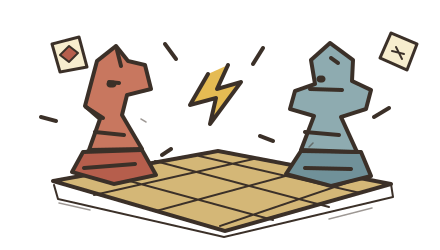
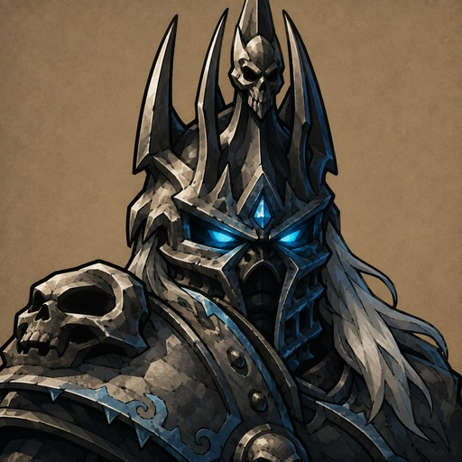
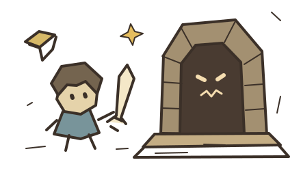
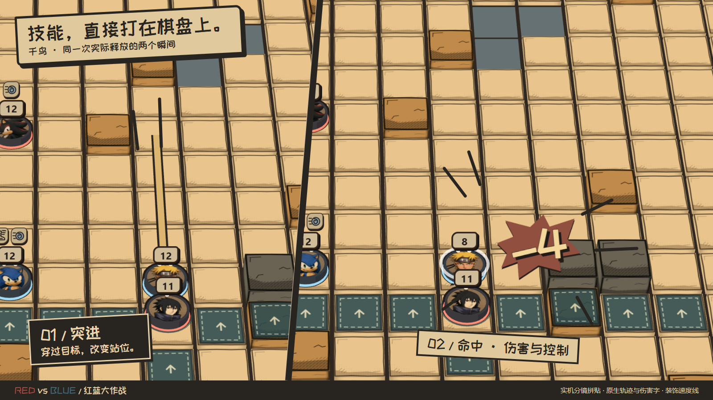

PVP
玩家对战
组建阵容，与其他玩家对战。
同人策略战棋 · WINDOWS / ANDROID
组建阵容，使用手牌与角色技能。
支持 PVP 对战与 PVE 冒险。
Windows / Android · 开发中 DEMO
部分登场角色

角色展示 · 实际组队以游戏阵营规则为准
游戏模式

组建阵容，与其他玩家对战。

单人或组队探索，招募队友、挑战关卡。
开发中同一局域网，建房即玩，无需登录。
登录所选服务器，远程创建或加入房间。

点击查看大图 ↗千鸟：突进 → 命中。实机分镜，伤害字已放大，速度线为宣传加工。完整实机界面 ↗
Windows 与 Android · 当前公开版本 0.1.9
GitHub 备用下载 ↗首次安装选择对应平台的客户端。已有版本可覆盖安装；游戏内也提供更新入口。互联网联机需要登录服务器，教程、单人与 LAN 可离线游玩。
已激活的外部资源包优先于内置资源。若技能描述仍是旧版，请检查资源包版本并激活配套资源。
发布说明与备用下载 ↗公开资源 1.0.5 · 最低客户端 0.1.8